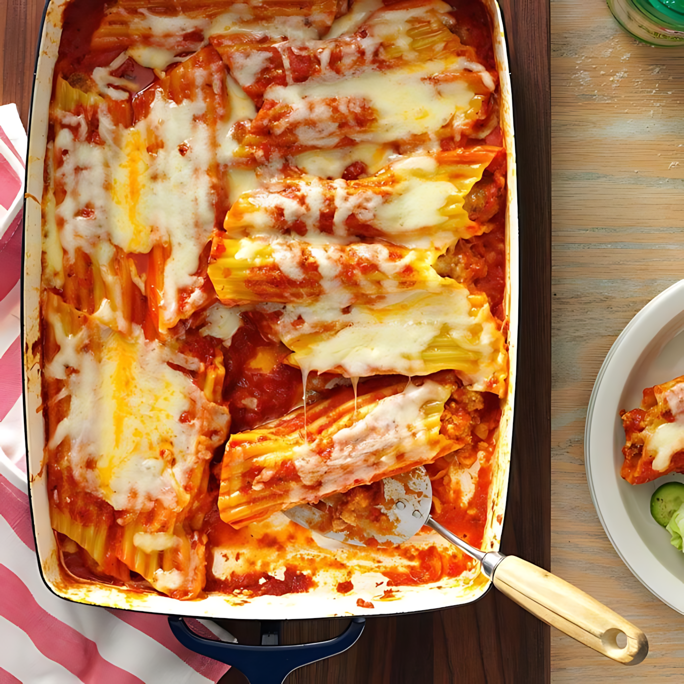

Easy Sausage Manicotti Bake

Description
This easy sausage manicotti bake is everything you love about slow-cooked Italian comfort food, but made convenient and fast enough for a weeknight supper using jarred Alfredo and marinara sauces, pre-cooked Italian chicken sausage, and string cheese.
Recipe
Ingredients
- Meat: 7 links cooked Italian chicken sausage, cut in half lengthwise.
- Pasta: 8 ounces uncooked manicotti pasta shells.
- Sauce: 15 ounces jar prepared Alfredo sauce and 24 ounce jar prepared marinara sauce.
- Cheeses: 8 sticks mozzarella string cheese, pulled in half lengthwise, 2 cups shredded mozzarella cheese and 1/4 cup grated Parmesan cheese.
- Optional: 1 tablespoon chopped fresh parsley for garnish, or to taste.
How to Make Sausage Manicotti Step-By-Step
Here's a very brief overview of what you can expect when you make homemade Sausage Manicotti:
- Step 1: Preheat the oven to 350 degrees F (175 degrees C). Fill each pasta shell with half of a sausage link and arrange in a lightly greased 9x13-inch baking dish.
- Step 2: Pour Alfredo sauce evenly over pasta shells. Place a half of a string cheese on top, between each pasta piece. Top evenly with marinara. Add 2/3 cup water to the marinara jar and shake well. Pour water around the edges of the dish. Top with shredded mozzarella and Parmesan. Cover with foil.
- Step 3: Bake in the preheated oven until golden around the edges and bubbly all over, about 1 hour, uncovering during the last 25 minutes. Let stand for 10 minutes before serving. Garnish with chopped parsley.